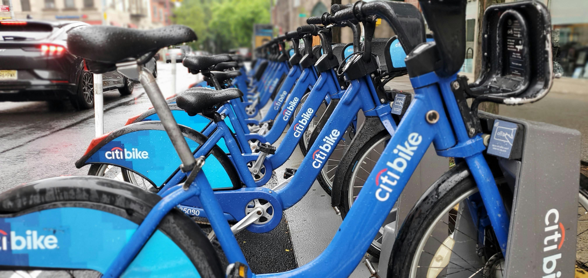
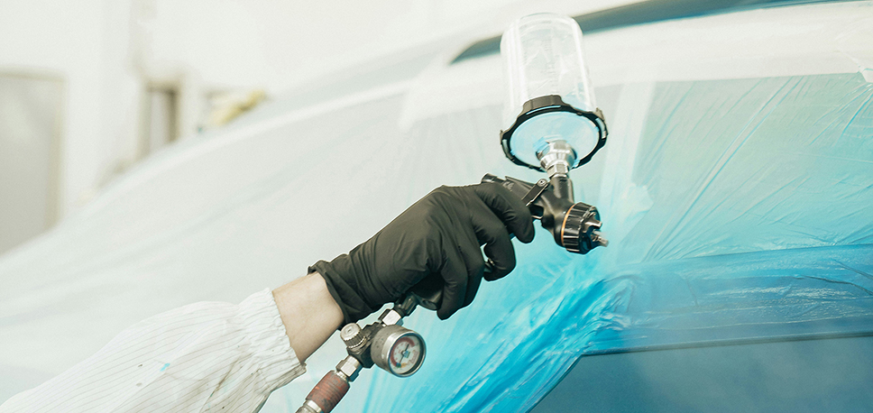
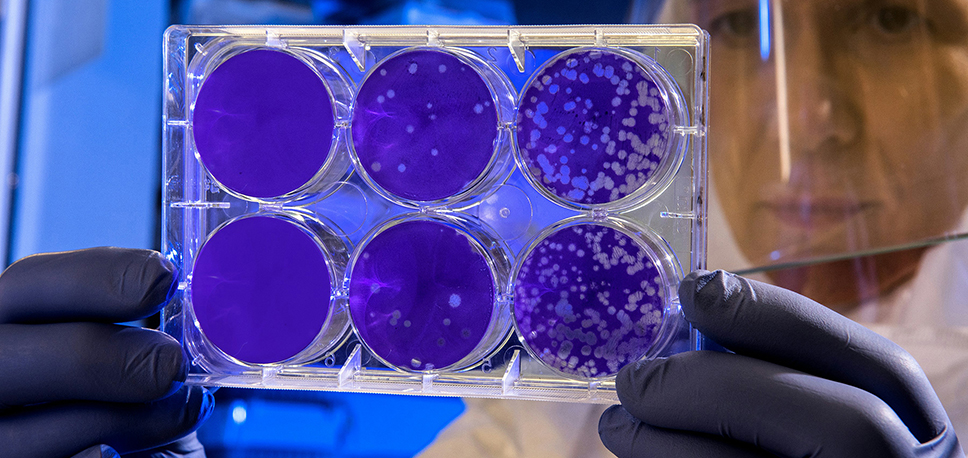

I am a user experience designer based in the Washington D.C. area with 12+ years of experience in delivering end-to-end UX design for software products.
I love building products that are useful, usable, and beautiful. Always looking to learn new things everyday.
Featured work
Personal project - CitiBike
CitiBike Data Analysis: Identifying new business opportunities.
Uncovering CitiBike rider trends to strengthen their business model and enhance customer experience.

Sherwin-Williams
Boosting painters’ efficiency with precise, easy-to-follow spectro calibration.
Creating an intuitive spectro calibration wizard that simplifies color-matching.

Guidehouse
Providing real-time, trusted COVID-19 data and local resources for communities.
Supporting communities during the pandemic, we built an intuitive NIH web app that centralized reliable COVID-19 data.

Pearson
Transforming Parent Engagement on the Connexus Student Dashboard.
Empowering parents with clear, actionable insights to stay engaged in their child’s academic journey.